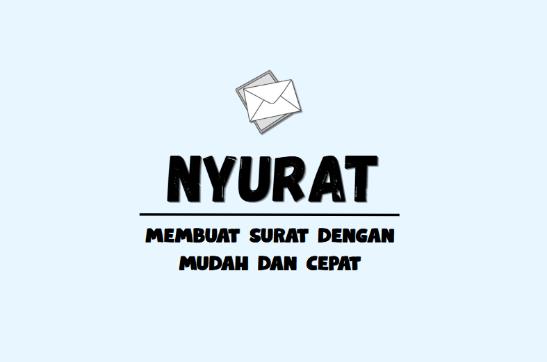

NYURAT Platform

Apa itu NYURAT?
NYURAT adalah platform pembelajaran interaktif yang dirancang khusus untuk membantu mahasiswa meningkatkan kemampuan penulisan surat formal dan profesional.
UMUM
Dikembangkan khusus untuk kebutuhan mahasiswa dengan interface modern
Bahasa Indonesia
Materi bahasa yang komprehensif dan terstruktur untuk pembelajaran efektif
Fitur Utama NYURAT
Pelajari dan praktikkan penulisan surat profesional melalui berbagai fitur interaktif
Surat Benar
Analisis mendalam contoh surat yang sudah sesuai kaidah penulisan formal untuk referensi pembelajaran
Surat Salah
Identifikasi dan pahami kesalahan umum dalam penulisan surat beserta koreksinya
Jenis Surat
Pelajari 3 kategori utama surat: Dinas, Niaga, dan Pribadi dengan contoh lengkap
Template 3
Gunakan template interaktif untuk praktik langsung
Path Pembelajaran
Ikuti langkah-langkah sistematis untuk meningkatkan kemampuan penulisan surat secara terstruktur
Pemahaman Dasar
Pelajari konsep dasar penulisan surat dan aturan format yang benar
Analisis Contoh
Studi kasus surat benar dan salah untuk pemahaman mendalam
Praktik Template
Gunakan template interaktif untuk praktik penulisan langsung
Contoh Surat: Benar vs Salah
Contoh Surat Benar
Format Surat
Contoh surat yang sesuai dengan kaidah penulisan formal

Contoh Surat Salah
Kesalahan Umum
Contoh kesalahan yang sering terjadi dalam penulisan surat formal

Tips Penulisan Penting
Panduan praktis untuk menulis surat yang profesional
Penulisan Kapital
Gunakan huruf kapital pada awal kalimat, nama orang, nama instansi, dan awal kutipan
Tanda Baca
Gunakan tanda baca yang tepat: koma untuk pemisah, titik untuk akhir kalimat
Ejaan Standar
Hindari singkatan seperti "yg", "dgn", "dll" dalam surat formal
Format Surat
Ikuti struktur surat standar: kop, tanggal, tujuan, isi, penutup, tanda tangan
3 Jenis Surat yang Bisa Digunakan
Surat Undangan Resmi
Surat resmi yang digunakan untuk mengundang mahasiswa dalam kegiatan akademik dan kemahasiswaan.
- Undangan Rapat
Surat Permohonan
Surat yang dibuat oleh mahasiswa untuk meminta izin, rekomendasi, atau kebutuhan akademik kepada pihak berwenang kampus.
- Permohonan Kerja
Surat Edaran
Surat resmi yang disebarkan kepada mahasiswa untuk memberitahukan informasi akademik, jadwal kegiatan, atau kebijakan kampus.
- Edaran Internal